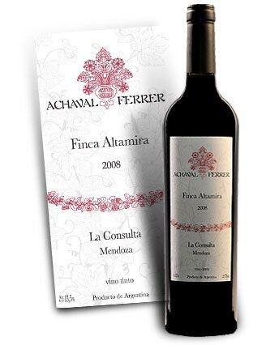
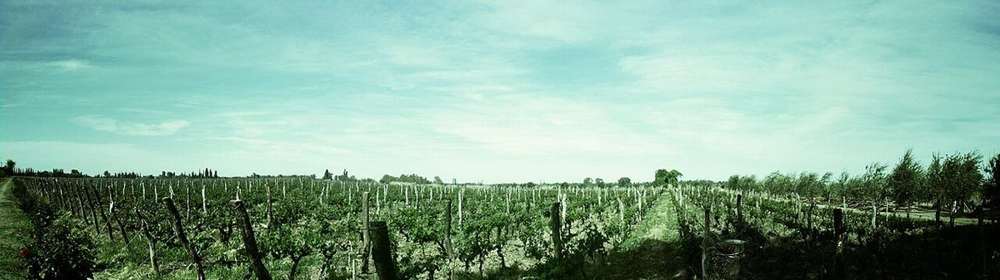
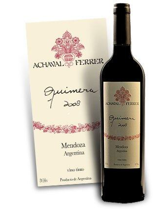

ROSSO

Cantina di Mendoza fondata alla fine degli anni Novanta da un gruppo di amici argentini e italiani, nota per i suoi Malbec di singola tenuta provenienti da vigne vecchie di diverse zone di Mendoza.

Achaval-Ferrer è nata nel 1998 per iniziativa di un gruppo di soci argentini, tra cui Santiago Achával e Manuel Ferrer, che diedero il nome alla cantina, insieme a professionisti italiani del vino come l’enologo Roberto Cipresso. Il loro obiettivo era produrre vini che riflettessero il carattere di vigneti specifici di Mendoza, in un’epoca in cui la maggior parte dei rossi argentini era ottenuta da uvaggi di diverse provenienze.
La cantina si è fatta conoscere per i suoi Malbec di singola tenuta, vinificati separatamente da vigne vecchie situate in zone diverse: Finca Altamira, a La Consulta, nella Valle de Uco; Finca Bella Vista, a Perdriel; e Finca Mirador, a Medrano. Il confronto tra questi vini, della stessa varietà e vinificati in modo simile, illustra l’influenza di suolo, altitudine e clima sul Malbec. Accanto a essi la casa produce un Malbec di Mendoza e un uvaggio chiamato Quimera.
Lo stile della cantina si basa su basse rese, vendemmia manuale e un affinamento in barrique che cerca di rispettare il frutto. La sede si trova a Perdriel, a Luján de Cuyo, sulle rive del fiume Mendoza. Dall’inizio degli anni Dieci la cantina appartiene a un gruppo internazionale di bevande, che ha mantenuto la sua linea di vini di tenuta.
I suoi vini di tenuta sono spesso considerati un esempio precoce dell’interesse argentino per l’espressione del luogo d’origine.


